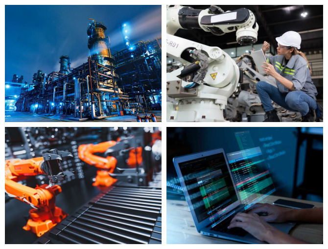

i-Tech 4.0: Objetivos y sectores
En i-Tech 4.0 tenemos como objetivo abordar todo tipo de retos de digitalización, ya sean industriales,
informáticos o de automatización, de la forma más eficiente posible. Nuestros campos de actuación
abarcan los sectores industriales que requieren procesos automatizados, las empresas con servicios
de robótica y también aquellas empresas que buscan digitalizar sus servicios informáticos. Sea cual
sea tu necesidad, no dudes en contactar con nosotros.
